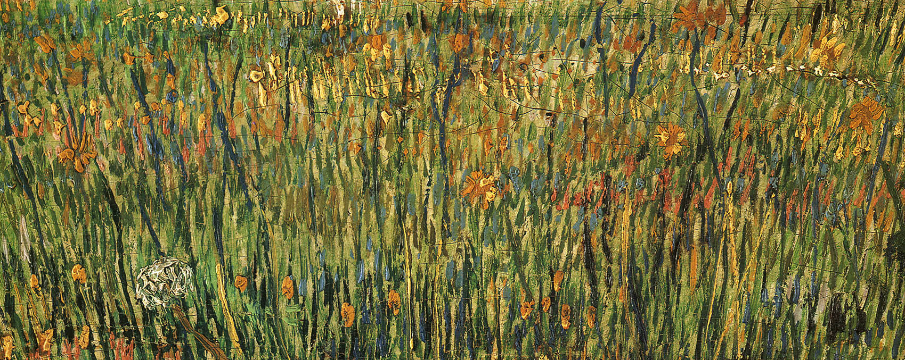

感恩与幸福
大量研究表明感恩可减少个体的精神病理学症状, 从而增加幸福感。当前，主观幸福感、心理幸福感和人际幸福感是幸福感研究的三大主要取向。 感恩是一种促进个体亲社会的道德情感。它是通过亲社会行为对个体幸福感的提升起作用的。即施惠者对受惠者的亲社会行为 能使受惠者产生感激之情, 而受惠者的感激之情 能够激发受惠者的亲社会行为以及加强施惠者亲社会行为。 身体健康是幸福感的重要标准。个体身体健康状况与表现出感恩的可能性呈正相关。而感恩的同时会给提升个体的自我幸福感，感受到幸福的人可通过积极睡前认知(如不会做噩梦, 好人有好报等)提升个体睡眠质量和数量, 减少 睡眠潜伏期, 从而促进精力恢复, 增进身体 健康。即身体的健康与幸福感的提升呈正向反馈。 对于提升个体幸福感的研究一直备受关注，感恩及其与人类幸福感的关系获得了非常有价值的研究结论。然而, 对该领域的研究仍存在许多明显的不足, 需要未来更进一步系统和深入的研究得了非常有价值的研究结论。